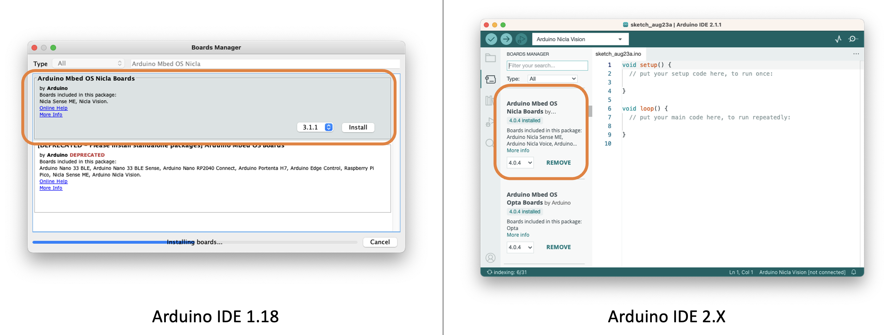
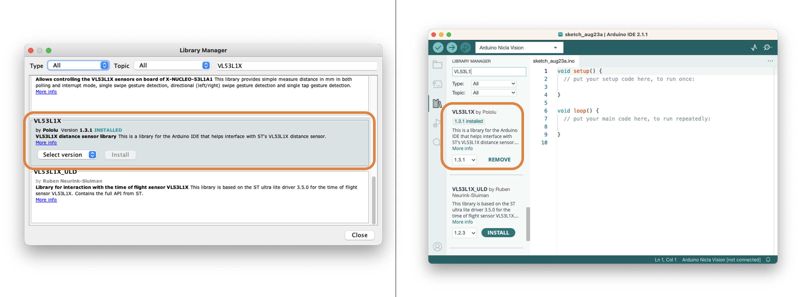

Setup

Overview
The Arduino Nicla Vision (sometimes called NiclaV) is a development board that includes two processors that can run tasks in parallel. It is part of a family of development boards with the same form factor but designed for specific tasks, such as the Nicla Sense ME and the Nicla Voice. The Niclas can efficiently run processes created with TensorFlow Lite. For example, one of the cores of the NiclaV runs a computer vision algorithm on the fly (inference). At the same time, the other executes low-level operations like controlling a motor and communicating or acting as a user interface. The onboard wireless module allows the simultaneous management of WiFi and Bluetooth Low Energy (BLE) connectivity.
Hardware
Two Parallel Cores
The central processor is the dual-core STM32H747, including a Cortex M7 at 480 MHz and a Cortex M4 at 240 MHz. The two cores communicate via a Remote Procedure Call mechanism that seamlessly allows calling functions on the other processor. Both processors share all the on-chip peripherals and can run:
Arduino sketches on top of the Arm Mbed OS
Native Mbed applications
MicroPython / JavaScript via an interpreter
TensorFlow Lite
Memory
Memory is crucial for embedded machine learning projects. The NiclaV board can host up to 16 MB of QSPI Flash for storage. However, it is essential to consider that the MCU SRAM is the one to be used with machine learning inferences; the STM32H747 is only 1 MB, shared by both processors. This MCU also has incorporated 2 MB of FLASH, mainly for code storage.
Sensors
Camera: A GC2145 2 MP Color CMOS Camera.
Microphone: The
MP34DT05is an ultra-compact, low-power, omnidirectional, digital MEMS microphone built with a capacitive sensing element and the IC interface.6-Axis IMU: 3D gyroscope and 3D accelerometer data from the
LSM6DSOX6-axis IMU.Time of Flight Sensor: The
VL53L1CBV0FYTime-of-Flight sensor adds accurate and low-power-ranging capabilities to Nicla Vision. The invisible near-infrared VCSEL laser (including the analog driver) is encapsulated with receiving optics in an all-in-one small module below the camera.
Arduino IDE Installation
Start connecting the board (micro USB) to your computer:
Install the Mbed OS core for Nicla boards in the Arduino IDE. Having the IDE open, navigate to Tools > Board > Board Manager, look for Arduino Nicla Vision on the search window, and install the board.

Next, go to Tools > Board > Arduino Mbed OS Nicla Boards and select Arduino Nicla Vision. Having your board connected to the USB, you should see the Nicla on Port and select it.
Open the Blink sketch on Examples/Basic and run it using the IDE Upload button. You should see the Built-in LED (green RGB) blinking, which means the Nicla board is correctly installed and functional!
Testing the Microphone
On Arduino IDE, go to Examples > PDM > PDMSerialPlotter, open it, and run the sketch. Open the Plotter and see the audio representation from the microphone:
Vary the frequency of the sound you generate and confirm that the mic is working correctly.
Testing the IMU
Before testing the IMU, it will be necessary to install the LSM6DSOX library. To do so, go to Library Manager and look for LSM6DSOX. Install the library provided by Arduino:
Next, go to Examples > Arduino_LSM6DSOX > SimpleAccelerometer and run the accelerometer test (you can also run Gyro and board temperature):
Testing the ToF (Time of Flight) Sensor
As we did with IMU, installing the VL53L1X ToF library is necessary. To do that, go to Library Manager and look for VL53L1X. Install the library provided by Pololu:

Next, run the sketch proximity_detection.ino:
On the Serial Monitor, you will see the distance from the camera to an object in front of it (max of 4 m).

Testing the Camera
We can also test the camera using, for example, the code provided on Examples > Camera > CameraCaptureRawBytes. We cannot see the image directly, but we can get the raw image data generated by the camera.
We can use the Web Serial Camera (API) to see the image generated by the camera. This web application streams the camera image over Web Serial from camera-equipped Arduino boards.
The Web Serial Camera example shows you how to send image data over the wire from your Arduino board and how to unpack the data in JavaScript for rendering. In addition, in the source code of the web application, we can find some example image filters that show us how to manipulate pixel data to achieve visual effects.
The Arduino sketch (CameraCaptureWebSerial) for sending the camera image data can be found here and is also directly available from the “Examples→Camera” menu in the Arduino IDE when selecting the Nicla board.
The web application for displaying the camera image can be accessed here. We may also look at [this tutorial, which explains the setup in more detail.
Installing the OpenMV IDE
OpenMV IDE is the premier integrated development environment with OpenMV cameras, similar to the Nicla Vision. It features a powerful text editor, debug terminal, and frame buffer viewer with a histogram display. We will use MicroPython to program the camera.
Go to the OpenMV IDE page, download the correct version for your Operating System, and follow the instructions for its installation on your computer.
The IDE should open, defaulting to the helloworld_1.py code on its Code Area. If not, you can open it from Files > Examples > HelloWord > helloword.py
Any messages sent through a serial connection (using print() or error messages) will be displayed on the Serial Terminal during run time. The image captured by a camera will be displayed in the Camera Viewer Area (or Frame Buffer) and in the Histogram area, immediately below the Camera Viewer.
Updating the Bootloader
Before connecting the Nicla to the OpenMV IDE, ensure you have the latest bootloader version. Go to your Arduino IDE, select the Nicla board, and open the sketch on Examples > STM_32H747_System STM32H747_manageBootloader. Upload the code to your board. The Serial Monitor will guide you.
Installing the Firmware
After updating the bootloader, put the Nicla Vision in bootloader mode by double-pressing the reset button on the board. The built-in green LED will start fading in and out. Now return to the OpenMV IDE and click on the connect icon (Left ToolBar):

A pop-up will tell you that a board in DFU mode was detected and ask how you would like to proceed. First, select Install the latest release firmware (vX.Y.Z). This action will install the latest OpenMV firmware on the Nicla Vision.
You can leave the option Erase internal file system unselected and click [OK].
Nicla’s green LED will start flashing while the OpenMV firmware is uploaded to the board, and a terminal window will then open, showing the flashing progress.
Wait until the green LED stops flashing and fading. When the process ends, you will see a message saying, “DFU firmware update complete!”. Press [OK].
A green play button appears when the Nicla Vison connects to the Tool Bar.

Also, note that a drive named “NO NAME” will appear on your computer.
Every time you press the [RESET] button on the board, the main.py script stored on it automatically executes. You can load the main.py code on the IDE (File > Open File...).
This code is the “Blink” code, confirming that the HW is OK.
Testing the Camera
To test the camera, let’s run helloword_1.py. For that, select the script on File > Examples > HelloWorld > helloword.py,
When clicking the green play button, the MicroPython script (helloworld.py) on the Code Area will be uploaded and run on the Nicla Vision. On-Camera Viewer, you will start to see the video streaming. The Serial Monitor will show us the FPS (Frames per second), which should be around 27fps.
Here is the helloworld.py script:
import sensor, time
sensor.reset() # Reset and initialize
# the sensor.
sensor.set_pixformat(sensor.RGB565) # Set pixel format to RGB565
# (or GRAYSCALE)
sensor.set_framesize(sensor.QVGA) # Set frame size to
# QVGA (320x240)
sensor.skip_frames(time = 2000) # Wait for settings take
# effect.
clock = time.clock() # Create a clock object
# to track the FPS.
while(True):
clock.tick() # Update the FPS clock.
img = sensor.snapshot() # Take a picture and return
# the image.
print(clock.fps())In GitHub, you can find the Python scripts used here.
The code can be split into two parts:
Setup: Where the libraries are imported, initialized and the variables are defined and initiated.
Loop: (while loop) part of the code that runs continually. The image (img variable) is captured (one frame). Each of those frames can be used for inference in Machine Learning Applications.
To interrupt the program execution, press the red [X] button.
Note: OpenMV Cam runs about half as fast when connected to the IDE. The FPS should increase once disconnected.
In the GitHub, You can find other Python scripts. Try to test the onboard sensors.
Connecting the Nicla Vision to Edge Impulse Studio
We will need the Edge Impulse Studio later in other labs. Edge Impulse is a leading development platform for machine learning on edge devices.
Edge Impulse officially supports the Nicla Vision. So, to start, please create a new project on the Studio and connect the Nicla to it. For that, follow the steps:
- Download the Arduino CLI for your specific computer architecture (OS)
- Download the most updated EI Firmware.
- Unzip both files and place all the files in the same folder.
- Put the Nicla-Vision on Boot Mode, pressing the reset button twice.
- Run the uploader (EI FW) corresponding to your OS:
- Executing the specific batch code for your OS will upload the binary arduino-nicla-vision.bin to your board.
Using
Chrome, WebUSB can be used to connect the Nicla to the EI Studio. The EI CLI is not needed.
Go to your project on the Studio, and on the Data Acquisition tab, select WebUSB (1). A window will pop up; choose the option that shows that the Nicla is paired (2) and press [Connect] (3).
You can choose which sensor data to pick in the Collect Data section on the Data Acquisition tab.
For example. IMU data (inertial):
Or Image (Camera):
You can also test an external sensor connected to the ADC (Nicla pin 0) and the other onboard sensors, such as the built-in microphone, the ToF (Proximity) or a combination of sensors (fusion).
Expanding the Nicla Vision Board (optional)
A last item to explore is that sometimes, during prototyping, it is essential to experiment with external sensors and devices. An excellent expansion to the Nicla is the Arduino MKR Connector Carrier (Grove compatible).
The shield has 14 Grove connectors: five single analog inputs (A0-A5), one double analog input (A5/A6), five single digital I/Os (D0-D4), one double digital I/O (D5/D6), one I2C (TWI), and one UART (Serial). All connectors are 5V compatible.
Note that all 17 Nicla Vision pins will be connected to the Shield Groves, but some Grove connections remain disconnected.
This shield is MKR compatible and can be used with the Nicla Vision and Portenta.

For example, suppose that on a TinyML project, you want to send inference results using a LoRaWAN device and add information about local luminosity. Often, with offline operations, a local low-power display such as an OLED is advised. This setup can be seen here:

The Grove Light Sensor would be connected to one of the single Analog pins (A0/PC4), the LoRaWAN device to the UART, and the OLED to the I2C connector.
The Nicla Pins 3 (Tx) and 4 (Rx) are connected with the Serial Shield connector. The UART communication is used with the LoRaWan device. Here is a simple code to use the UART:
# UART Test - By: marcelo_rovai - Sat Sep 23 2023
import time
from pyb import UART
from pyb import LED
redLED = LED(1) # built-in red LED
# Init UART object.
# Nicla Vision's UART (TX/RX pins) is on "LP1"
uart = UART("LP1", 9600)
while(True):
uart.write("Hello World!\r\n")
redLED.toggle()
time.sleep_ms(1000)To verify that the UART is working, you should, for example, connect another device as the Arduino UNO, displaying “Hello Word” on the Serial Monitor. Here is the code.
Below is the Hello World code to be used with the I2C OLED. The MicroPython SSD1306 OLED driver (ssd1306.py), created by Adafruit, should also be uploaded to the Nicla (the ssd1306.py script can be found in GitHub).
# Nicla_OLED_Hello_World - By: marcelo_rovai - Sat Sep 30 2023
#Save on device: MicroPython SSD1306 OLED driver,
# I2C and SPI interfaces created by Adafruit
import ssd1306
from machine import I2C
i2c = I2C(1)
oled_width = 128
oled_height = 64
oled = ssd1306.SSD1306_I2C(oled_width, oled_height, i2c)
oled.text('Hello, World', 10, 10)
oled.show()Finally, here is a simple script to read the ADC value on pin “PC4” (Nicla pin A0):
# Light Sensor (A0) - By: marcelo_rovai - Wed Oct 4 2023
import pyb
from time import sleep
adc = pyb.ADC(pyb.Pin("PC4")) # create an analog object
# from a pin
val = adc.read() # read an analog value
while (True):
val = adc.read()
print ("Light={}".format (val))
sleep (1)The ADC can be used for other sensor variables, such as Temperature.
Note that the above scripts (downloaded from Github) introduce only how to connect external devices with the Nicla Vision board using MicroPython.
Summary
The Arduino Nicla Vision is an excellent tiny device for industrial and professional uses! However, it is powerful, trustworthy, low power, and has suitable sensors for the most common embedded machine learning applications such as vision, movement, sensor fusion, and sound.
On the GitHub repository, you will find the last version of all the code used or commented on in this hands-on lab.